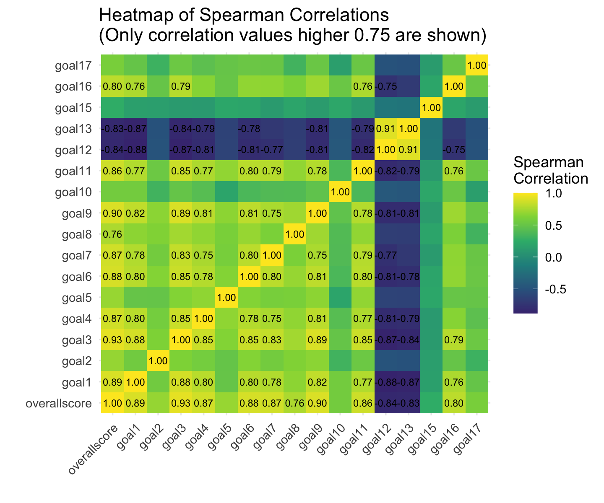

p_value_threshold <- 0.05
# Selecting columns of interest
data_4_goals <- data_4 %>%
dplyr::select(overallscore, goal1, goal2, goal3, goal4, goal5,
goal6, goal7, goal8, goal9, goal10, goal11, goal12,
goal13, goal15, goal16, goal17)
# Initialize matrices for correlations and p-values
n <- ncol(data_4_goals)
cor_matrix <- matrix(NA, n, n)
p_matrix <- matrix(NA, n, n)
colnames(cor_matrix) <- colnames(data_4_goals)
rownames(cor_matrix) <- colnames(data_4_goals)
colnames(p_matrix) <- colnames(data_4_goals)
rownames(p_matrix) <- colnames(data_4_goals)
# Calculating correlations and p-values
for (i in 1:n) {
for (j in 1:n) {
if (i != j) {
test <- cor.test(data_4_goals[[i]], data_4_goals[[j]], method = "spearman")
cor_matrix[i, j] <- test$estimate
p_matrix[i, j] <- test$p.value}}}
# Collecting pairs of variables with p-value > 0.05
high_p_value_pairs <- list()
# Iterating over the matrix
for (i in 1:(n-1)) { # Iterate only until n-1 to avoid redundant comparisons
for (j in (i+1):n) {
if (p_matrix[i, j] > 0.05) {
pair_name <- paste(colnames(p_matrix)[i], "&", colnames(p_matrix)[j])
high_p_value_pairs[[length(high_p_value_pairs) + 1]] <- pair_name
}
}
}
# Display the list of pairs
print(high_p_value_pairs)
#> list()
# Applying a p-value threshold
cor_matrix[which(p_matrix > p_value_threshold, arr.ind = TRUE)] <- NA
# Melting the data
melted_corr <- melt(cor_matrix, na.rm = TRUE)
# Creation of the heatmap
ggplot(data = melted_corr,
aes(x = Var1,
y = Var2,
fill = value)) +
geom_tile() +
geom_text(aes(label = sprintf("%.2f", value)),
vjust = 0.5,
size = 2.5) +
scale_fill_viridis_c(name = "Spearman\nCorrelation",
begin = 0.1,
end = 1) +
theme_minimal() +
theme(axis.text.x = element_text(angle = 45,
hjust = 1)) +
labs(title = "Heatmap of Statistically Significant Spearman Correlations",
x = "",
y = "")